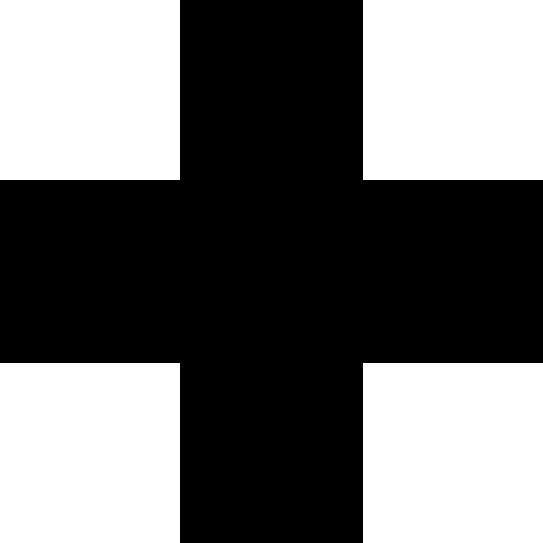

Your sketch:
So far, you've been asked to draw shapes using their default draw mode. By default, rectangles and squares are drawn in CORNER mode while ellipses and circles are drawn in CENTER mode. In the next two exercises, you will recreate sketches from stage 2 using CENTER mode to draw rectangles and squares.
Copy and paste the contents of exercise2-2/sketch.js into exercise3-1/sketch.js and adjust your code to use rectMode(CENTER) to draw the rectangles (or squares)
that make up the plus symbol.
Expected output:

When you are done, check your work using check-exercise3-1.html.
You only need to edit sketch.js.
rectMode(CENTER) before calling any shape functions.Some useful links in the p5.js documentation: